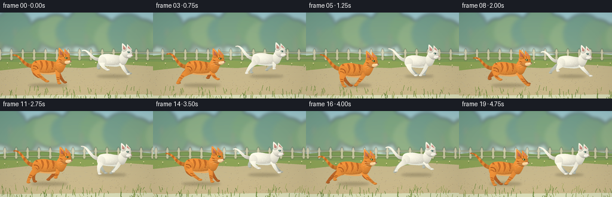
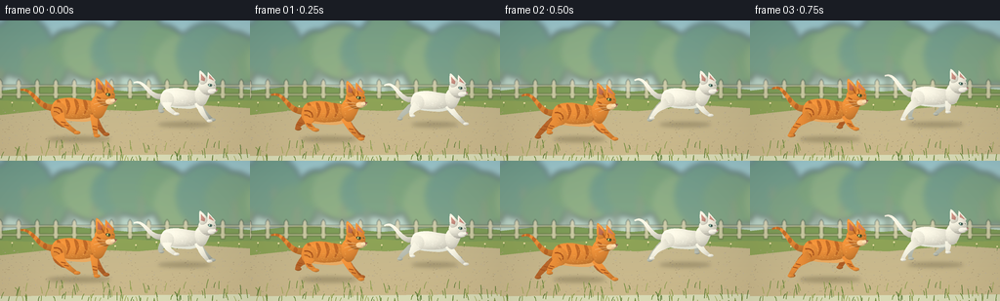

CODING AGENTS AS PIXEL WORLD MODELS
traex/GPT-6.1-Sol · instance_preservation_0004
点击播放 · 原生 RGB 像素
逐轮保存的候选
回放视频、检查图与代码变化。
每份候选均可单独播放。实际图片检查记录在下方工具轨迹中。
候选 01播放与检查图
点击播放 · 原生 RGB 像素


展开代码变化
--- 上一保存版本
+++ 本次保存版本
@@ -0,0 +1,253 @@
+from pathlib import Path
+import math
+import numpy as np
+from PIL import Image, ImageDraw, ImageFilter
+import artifact_io
+
+ROOT=Path(__file__).resolve().parent
+W,H,S=256,144,4
+rng=np.random.default_rng(82)
+
+def bezier(points,n=32):
+ p=np.array(points,float); t=np.linspace(0,1,n)[:,None]
+ return ((1-t)**3*p[0]+3*(1-t)**2*t*p[1]+3*(1-t)*t*t*p[2]+t**3*p[3]).tolist()
+
+def smooth_closed(points, steps=10):
+ p=np.asarray(points,float); out=[]
+ for i in range(len(p)):
+ a,b,c,d=p[(i-1)%len(p)],p[i],p[(i+1)%len(p)],p[(i+2)%len(p)]
+ for t in np.linspace(0,1,steps,endpoint=False):
+ out.append((.5*((2*b)+(-a+c)*t+(2*a-5*b+4*c-d)*t*t+(-a+3*b-3*c+d)*t**3)).tolist())
+ return out
+
+def poly_mask(points):
+ m=Image.new('L',(W*S,H*S)); ImageDraw.Draw(m).polygon([(round(x*S),round(y*S)) for x,y in points],fill=255); return m
+
+def ell_mask(box):
+ m=Image.new('L',(W*S,H*S)); ImageDraw.Draw(m).ellipse(tuple(round(v*S) for v in box),fill=255); return m
+
+YY,XX=np.mgrid[:H*S,:W*S].astype(float); XX/=S; YY/=S
+
+def surface(canvas,mask,base,center,radii,depth=1.0,texture=0.0,seed=1):
+ cx,cy=center; rx,ry=radii
+ nx=(XX-cx)/rx; ny=(YY-cy)/ry
+ # Rounded fur surfaces under soft upper-left sunlight.
+ z=np.sqrt(np.maximum(0,1-np.minimum(1,nx*nx*.42+ny*ny*.88)))
+ light=np.clip(.70+.29*z-.10*nx-.13*ny,.48,1.17)
+ light=1+(light-1)*depth
+ if texture:
+ noise=np.random.default_rng(seed).normal(0,texture,(H*S,W*S))
+ light+=noise
+ col=np.clip(np.array(base)[None,None,:]*light[:,:,None],0,255).astype(np.uint8)
+ canvas.paste(Image.fromarray(col), (0,0), mask)
+
+def line(canvas,pts,color,width=1):
+ d=ImageDraw.Draw(canvas)
+ d.line([(round(x*S),round(y*S)) for x,y in pts],fill=color,width=max(1,round(width*S)),joint='curve')
+
+def ellipse(canvas,box,color):
+ ImageDraw.Draw(canvas).ellipse(tuple(round(v*S) for v in box),fill=color)
+
+# Coherent world objects, reused throughout the shot.
+grit=[(rng.uniform(0,600),rng.uniform(91,136),rng.uniform(.13,.6),rng.uniform(.4,1)) for _ in range(1050)]
+grass=[(rng.uniform(0,560),rng.uniform(128,151),rng.uniform(2,8),rng.uniform(-3,3),rng.integers(0,4)) for _ in range(230)]
+background_trees=[(x,rng.uniform(25,50),rng.uniform(18,35)) for x in range(-50,420,24)]
+
+
+def background(t):
+ y=np.linspace(0,1,H*S)[:,None,None]
+ top=np.array([153,199,207])[None,None,:]; bot=np.array([225,228,189])[None,None,:]
+ sky=np.broadcast_to(top*(1-y)+bot*y,(H*S,W*S,3)).copy().astype(np.uint8)
+ im=Image.fromarray(sky)
+ far=Image.new('RGBA',im.size,(0,0,0,0)); d=ImageDraw.Draw(far)
+ # Tree canopies; gentle background parallax, more distant than the path.
+ shift=t*3
+ for j,(x,cy,r) in enumerate(background_trees):
+ x=(x-shift+60)%470-60
+ color=[(105,145,107,180),(112,153,107,195),(130,164,113,190),(87,133,105,160)][j%4]
+ d.ellipse(((x-r)*S,(cy-r)*S,(x+r)*S,(cy+r)*S),fill=color)
+ d.line(((x+3)*S,cy*S,(x+1)*S,83*S),fill=(116,123,87,140),width=3*S)
+ far=far.filter(ImageFilter.GaussianBlur(3.0*S)); im=Image.alpha_composite(im.convert('RGBA'),far).convert('RGB')
+ d=ImageDraw.Draw(im)
+ # Distant lawn and an understated cream garden fence.
+ d.polygon([(0,72*S),(55*S,66*S),(135*S,73*S),(207*S,67*S),(W*S,71*S),(W*S,103*S),(0,103*S)],fill=(124,155,88))
+ fence=Image.new('RGBA',im.size,(0,0,0,0)); f=ImageDraw.Draw(fence)
+ for py in [66,75]: f.rectangle((0,py*S,W*S,(py+2)*S),fill=(198,194,159,175))
+ for j in range(-1,19):
+ x=j*19-(t*4)%19
+ f.polygon([((x-2)*S,80*S),((x-2)*S,63*S),(x*S,60*S),((x+2)*S,63*S),((x+2)*S,80*S)],fill=(219,211,179,205))
+ fence=fence.filter(ImageFilter.GaussianBlur(.55*S)); im=Image.alpha_composite(im.convert('RGBA'),fence).convert('RGB')
+ d=ImageDraw.Draw(im)
+ d.polygon([(0,82*S),(64*S,84*S),(125*S,80*S),(190*S,84*S),(256*S,82*S),(256*S,101*S),(0,104*S)],fill=(139,162,87))
+ # Sandy track, with warm variation and perspective-scaled pebbles.
+ ground=np.zeros((H*S,W*S,3),dtype=np.uint8)
+ for row in range(H*S):
+ yy=row/S; v=np.clip((yy-88)/55,0,1)
+ ground[row,:]=np.array([196,183,141])*(1-v)+np.array([209,191,145])*v
+ gm=poly_mask([(0,97),(65,90),(141,93),(209,87),(256,90),(256,137),(0,139)])
+ im.paste(Image.fromarray(ground),(0,0),gm)
+ for x,y,r,l in grit:
+ x=(x-t*31)%600-30
+ if 0<x<W:
+ c=tuple(int(q*l+(1-l)*206) for q in (166,147,107))
+ ellipse(im,(x-r,y-r*.42,x+r,y+r*.42),c)
+ # Small meadow flowers along the far verge.
+ for j in range(28):
+ x=(j*21.13-t*17)%600-30; yy=88+2.2*math.sin(j*8.2)
+ if 0<x<W:
+ line(im,[(x,yy+2),(x+.5,yy-2)],(100,135,67),.5)
+ ellipse(im,(x-.8,yy-3,x+.8,yy-1.5),(237,224,170))
+ return im
+
+
+def ribbon(points,widths):
+ p=np.array(points); tangent=np.gradient(p,axis=0)
+ normal=np.stack([-tangent[:,1],tangent[:,0]],axis=1)
+ normal/=np.maximum(.001,np.linalg.norm(normal,axis=1))[:,None]
+ widths=np.asarray(widths)[:,None]
+ return np.concatenate([p+normal*widths,(p-normal*widths)[::-1]]).tolist()
+
+
+def cat(im,cx,cy,scale,phase,orange):
+ # A complete, persistent anatomical model. All limbs attach to the same body.
+ s=scale; bounce=-2.7*math.cos(2*phase)
+ cy+=bounce*s
+ def P(p): return (cx+p[0]*s,cy+p[1]*s)
+ def points(p): return [P(q) for q in p]
+ base=(235,143,57) if orange else (244,242,226)
+ farbase=(185,103,43) if orange else (184,190,178)
+ stripe=(169,85,30)
+ def shape(p,color,center,radii,depth=1,tex=.008):
+ m=poly_mask(points(p)); surface(im,m,color,P(center),(radii[0]*s,radii[1]*s),depth,tex,19 if orange else 31); return m
+ def oval(box,color,center=None,radii=None,depth=1,tex=.008):
+ bb=(*P(box[:2]),*P(box[2:])); m=ell_mask(bb)
+ if center is None: center=((box[0]+box[2])/2,(box[1]+box[3])/2)
+ if radii is None: radii=((box[2]-box[0])/2,(box[3]-box[1])/2)
+ surface(im,m,color,P(center),(radii[0]*s,radii[1]*s),depth,tex,31); return m
+ def stroke(p,c,w): line(im,points(p),c,w*s)
+
+ # Tapered tail waves from its anatomical root at the rump.
+ tail=bezier([(-23,-4),(-40,-3+3*math.sin(phase)),(-43,-28+4*math.cos(phase)),(-57,-24+4*math.sin(phase+.5))],40)
+ tm=shape(ribbon(tail,np.linspace(3.5,.85,len(tail))),base,(-39,-14),(21,14),.65)
+ if orange:
+ lay=Image.new('RGB',im.size,(0,0,0)); mask=Image.new('L',im.size)
+ md=ImageDraw.Draw(mask)
+ for j in [8,16,24,32,38]:
+ tx,ty=tail[j]; md.ellipse(((cx+(tx-2)*s)*S,(cy+(ty-3)*s)*S,(cx+(tx+2)*s)*S,(cy+(ty+3)*s)*S),fill=155)
+ a=np.minimum(np.asarray(mask),np.asarray(tm)); im.paste(stripe,(0,0,W*S,H*S),Image.fromarray(a))
+
+ # Gallop: hind legs extend back then tuck forward, forelegs reach then push.
+ # Two near/far pairs use slightly offset phase, giving four separate paws.
+ def leg(front,near):
+ ph=phase+(0 if near else .78)+(0 if front else 1.9)
+ u=math.sin(ph); v=math.cos(ph)
+ if front:
+ hip=np.array([18,3]); elbow=np.array([19+8*u,15+2*v]); foot=np.array([20+18*u,25-9*max(0,-v)])
+ width=(3.8,2.9,1.8)
+ else:
+ hip=np.array([-18,3]); elbow=np.array([-23+9*u,12+2*v]); foot=np.array([-19+20*u,25-10*max(0,-v)])
+ width=(5.7,3.2,2.0)
+ if not near:
+ hip+=np.array([-1,-1]); elbow+=np.array([-2,-1]); foot+=np.array([-3,-1.5])
+ path=bezier([hip,hip*.25+elbow*.75,elbow,foot],24)
+ ww=np.interp(np.linspace(0,1,24),[0,.52,1],width)
+ shape(ribbon(path,ww),base if near else farbase,tuple((hip+foot)/2),(12,20),.8)
+ oval((foot[0]-2.1,foot[1]-1.8,foot[0]+4.4,foot[1]+1.7),base if near else farbase,depth=.7)
+ if orange:
+ for fraction in [.53,.72]:
+ p=np.array(path[int(fraction*(len(path)-1))]);
+ stroke([p+[-2.3,-.4],p+[2.1,.6]],stripe,1.2)
+ # Tiny toe divisions, restrained rather than outlined.
+ if near:
+ for off in [0,1.6]: stroke([(foot[0]+1.6+off,foot[1]+.4),(foot[0]+2+off,foot[1]+1.2)],(161,111,65) if orange else (177,177,164),.35)
+ leg(False,False); leg(True,False)
+ torso=smooth_closed([(-25,-5),(-20,-12),(-7,-14),(7,-12),(18,-10),(25,-3),(23,5),(13,10),(-2,10),(-17,8),(-24,3)])
+ bodymask=shape(torso,base,(0,-2),(28,14),1,.012)
+ # Cream abdomen follows body, keeping the tabby distinctly orange.
+ belly=smooth_closed([(-17,6),(-4,8),(11,7),(17,5),(17,9),(5,11),(-7,10),(-18,8)])
+ bm=poly_mask(points(belly)); a=np.minimum(np.asarray(bodymask),np.asarray(bm)); im.paste((235,171,98) if orange else (227,230,217),(0,0,W*S,H*S),Image.fromarray(a))
+ if orange:
+ stripes=Image.new('L',im.size); sd=ImageDraw.Draw(stripes)
+ for x in [-18,-9,0,9,17]:
+ p=smooth_closed([(x-2,-12),(x+1,-11),(x+3,-5),(x+1,1),(x-1,3),(x,-3)])
+ sd.polygon([(a*S,b*S) for a,b in points(p)],fill=166)
+ a=np.minimum(np.asarray(stripes),np.asarray(bodymask)); im.paste(stripe,(0,0,W*S,H*S),Image.fromarray(a))
+ # Shoulder and haunch volumes, integrated with the silhouette.
+ oval((-26,-9,-10,9),base,(-19,-2),(11,12),.45)
+ if orange:
+ stroke(bezier([(-23,-4),(-17,-5),(-14,-1),(-15,3)],12),stripe,1.4)
+ stroke(bezier([(-23,0),(-18,0),(-17,3),(-17,5)],12),stripe,1.1)
+ leg(False,True); leg(True,True)
+ # Raised neck, compact feline skull and pointed ears, no long canine muzzle.
+ shape(smooth_closed([(15,-9),(22,-18),(31,-17),(33,-8),(26,6),(18,5)]),base,(24,-8),(11,16),.8)
+ # Far ear before the head.
+ shape([(29,-20),(30,-33),(39,-23),(36,-16)],base,(33,-24),(8,11),.8)
+ shape([(31.2,-23),(31.7,-29.5),(36.8,-23.2)],(204,143,131) if not orange else (203,125,103),(34,-25),(5,7),.45)
+ headshape=smooth_closed([(21,-22),(27,-25),(34,-24),(39,-19),(39,-12),(35,-7),(28,-6),(22,-10),(19,-16)])
+ hm=shape(headshape,base,(29,-17),(12,11),1,.014)
+ # Near ear tall and triangular, with fine inner-ear edge.
+ shape(smooth_closed([(21,-19),(20,-32),(22,-34),(29,-26),(28,-20)]),base,(24,-26),(6,10),.8)
+ shape([(22,-23),(21.9,-30.7),(26.8,-25.2),(26,-22)],(204,146,133) if not orange else (192,112,84),(24,-26),(4,6),.6)
+ stroke([(21,-32),(22,-33),(26,-28)],(249,187,112) if orange else (255,252,241),.5)
+ if orange:
+ stroke([(26,-24),(28,-20),(29,-19)],stripe,1.15)
+ stroke([(31,-24),(32,-22),(32,-20)],stripe,1.0)
+ stroke([(21,-15),(25,-13)],stripe,1.3)
+ stroke([(22,-11),(26,-10)],stripe,.9)
+ # Eyes: dark almond contour, jewel-green iris, directional slit and catchlight.
+ eye=smooth_closed([(30,-18),(32,-19),(35,-18),(34.3,-15.9),(32,-15.8)])
+ shape(eye,(75,66,42) if orange else (103,113,105),(32.6,-17.4),(3,2),0,0)
+ oval((31,-18.7,34.5,-16),(158,174,78) if orange else (119,172,162),depth=.45,tex=0)
+ oval((33,-18.6,33.9,-16.2),(29,42,32),depth=0,tex=0)
+ oval((31.8,-18.1,32.55,-17.4),(255,255,227),depth=0,tex=0)
+ # Hint of the far eye around the turn of the head.
+ stroke([(37.0,-17.8),(38.1,-17.2)],(71,85,72),.65)
+ # Broad cheek and two small muzzle pads.
+ oval((30,-13,39,-7),(248,205,146) if orange else (252,249,237),depth=.65)
+ oval((35,-13,41,-8.7),(249,219,173) if orange else (248,245,231),depth=.65)
+ shape([(39,-13.1),(42,-12.6),(40.2,-10.8)],(145,87,76) if orange else (185,129,131),(40,-12),(2,2),0,0)
+ stroke([(40,-10.8),(39.6,-9.5),(37.8,-8.8)],(112,76,57) if orange else (136,125,117),.45)
+ # Fine whiskers flow backwards in the wind.
+ wc=(252,228,187) if orange else (232,229,215)
+ for p in [[(35,-10.6),(26,-12.4),(19,-12.2)],[(35,-9.4),(25,-9.3),(18,-7.2)],[(35,-8.9),(28,-6.9),(22,-4.7)]]:
+ stroke(p,wc,.3)
+ # A few fine fur strokes at the chest and lit back soften the geometry.
+ fur_rng=np.random.default_rng(93 if orange else 97)
+ for _ in range(70):
+ x=fur_rng.uniform(-22,19); y=fur_rng.uniform(-10,6)
+ px,py=P((x,y)); ix=int(px*S); iy=int(py*S)
+ if 0<=ix<W*S and 0<=iy<H*S and np.asarray(bodymask)[iy,ix]>0:
+ stroke([(x,y),(x+fur_rng.uniform(.6,1.4),y+.2)],(248,177,91) if orange else (255,252,238),.17)
+
+
+def make_frame(i):
+ t=i/4
+ im=background(t)
+ phase=2*math.pi*i/7
+ # Camera tracks the pair; they retain identity, spacing and the same screen order.
+ orange_x=78+2.5*math.sin(t*.9)
+ white_x=185+2.5*math.sin(t*.9+.7)
+ # Grounded broad, soft contact shadows change with the airborne part of the gait.
+ sh=Image.new('RGBA',im.size,(0,0,0,0)); sd=ImageDraw.Draw(sh)
+ for cx,yy,ss,ph in [(white_x,107,.88,phase+.6),(orange_x,122,1,phase)]:
+ spread=1+.10*math.cos(2*ph)
+ sd.ellipse(((cx-27*ss*spread)*S,(yy-2.6*ss)*S,(cx+32*ss*spread)*S,(yy+2.5*ss)*S),fill=(64,57,34,71))
+ sh=sh.filter(ImageFilter.GaussianBlur(2*S)); im=Image.alpha_composite(im.convert('RGBA'),sh).convert('RGB')
+ cat(im,white_x,82,.87,phase+.65,False)
+ cat(im,orange_x,96,1,phase,True)
+ # Near verge gives gentle depth, but never occludes faces or paws.
+ for x,y,l,dx,k in grass:
+ x=(x-t*39)%560-20
+ if 0<x<W:
+ c=[(91,124,54),(113,143,64),(137,157,77),(161,173,93)][k]
+ line(im,[(x,y+2),(x+dx*.3,y-l*.3),(x+dx,y-l)],c,.65)
+ # Subtle warm optical finish, without titles or overlays.
+ arr=np.asarray(im).astype(float)
+ vign=1-.055*((XX-128)**2/128**2+(YY-72)**2/80**2)
+ arr=np.clip(arr*vign[:,:,None]+np.array([2.5,1.2,0]),0,255).astype(np.uint8)
+ return np.asarray(Image.fromarray(arr).resize((W,H),Image.Resampling.LANCZOS))
+
+if __name__=='__main__':
+ frames=np.stack([make_frame(i) for i in range(20)])
+ artifact_io.save(frames,ROOT)
+ print('Saved',frames.shape,frames.dtype,'to',ROOT)
可观测工具轨迹
实际执行的命令与返回图片。
命令 1exit 0
/bin/bash -lc 'ls -la && cat prompt.txt && cat GENERATION_RULES.md && cat task_spec.json'
命令 2exit 0
/bin/bash -lc 'cat artifact_io.py && cat player_template.html'
命令 3exit 0
/bin/bash -lc "python - <<'PY'
import PIL, numpy
try:
import scipy
print('scipy available')
except: pass
PY"命令 4exit 0
/bin/bash -lc "cat > generate.py <<'PY'
from pathlib import Path
import math
import numpy as np
from PIL import Image, ImageDraw, ImageFilter
import artifact_io
ROOT=Path(__file__).resolve().parent
W,H,S=256,144,4
rng=np.random.default_rng(82)
def bezier(points,n=32):
p=np.array(points,float); t=np.linspace(0,1,n)[:,None]
return ((1-t)**3*p[0]+3*(1-t)**2*t*p[1]+3*(1-t)*t*t*p[2]+t**3*p[3]).tolist()
def smooth_closed(points, steps=10):
p=np.asarray(points,float); out=[]
for i in range(len(p)):
a,b,c,d=p[(i-1)%len(p)],p[i],p[(i+1)%len(p)],p[(i+2)%len(p)]
for t in np.linspace(0,1,steps,endpoint=False):
out.append((.5*((2*b)+(-a+c)*t+(2*a-5*b+4*c-d)*t*t+(-a+3*b-3*c+d)*t**3)).tolist())
return out
def poly_mask(points):
m=Image.new('L',(W*S,H*S)); ImageDraw.Draw(m).polygon([(round(x*S),round(y*S)) for x,y in points],fill=255); return m
def ell_mask(box):
m=Image.new('L',(W*S,H*S)); ImageDraw.Draw(m).ellipse(tuple(round(v*S) for v in box),fill=255); return m
YY,XX=np.mgrid[:H*S,:W*S].astype(float); XX/=S; YY/=S
def surface(canvas,mask,base,center,radii,depth=1.0,texture=0.0,seed=1):
cx,cy=center; rx,ry=radii
nx=(XX-cx)/rx; ny=(YY-cy)/ry
# Rounded fur surfaces under soft upper-left sunlight.
z=np.sqrt(np.maximum(0,1-np.minimum(1,nx*nx*.42+ny*ny*.88)))
light=np.clip(.70+.29*z-.10*nx-.13*ny,.48,1.17)
light=1+(light-1)*depth
if texture:
noise=np.random.default_rng(seed).normal(0,texture,(H*S,W*S))
light+=noise
col=np.clip(np.array(base)[None,None,:]*light[:,:,None],0,255).astype(np.uint8)
canvas.paste(Image.fromarray(col), (0,0), mask)
def line(canvas,pts,color,width=1):
d=ImageDraw.Draw(canvas)
d.line([(round(x*S),round(y*S)) for x,y in pts],fill=color,width=max(1,round(width*S)),joint='curve')
def ellipse(canvas,box,color):
ImageDraw.Draw(canvas).ellipse(tuple(round(v*S) for v in box),fill=color)
# Coherent world objects, reused throughout the shot.
grit=[(rng.uniform(0,600),rng.uniform(91,136),rng.uniform(.13,.6),rng.uniform(.4,1)) for _ in range(1050)]
grass=[(rng.uniform(0,560),rng.uniform(128,151),rng.uniform(2,8),rng.uniform(-3,3),rng.integers(0,4)) for _ in range(230)]
background_trees=[(x,rng.uniform(25,50),rng.uniform(18,35)) for x in range(-50,420,24)]
def background(t):
y=np.linspace(0,1,H*S)[:,None,None]
top=np.array([153,199,207])[None,None,:]; bot=np.array([225,228,189])[None,None,:]
sky=np.broadcast_to(top*(1-y)+bot*y,(H*S,W*S,3)).copy().astype(np.uint8)
im=Image.fromarray(sky)
far=Image.new('RGBA',im.size,(0,0,0,0)); d=ImageDraw.Draw(far)
# Tree canopies; gentle background parallax, more distant than the path.
shift=t*3
for j,(x,cy,r) in enumerate(background_trees):
x=(x-shift+60)%470-60
color=[(105,145,107,180),(112,153,107,195),(130,164,113,190),(87,133,105,160)][j%4]
d.ellipse(((x-r)*S,(cy-r)*S,(x+r)*S,(cy+r)*S),fill=color)
d.line(((x+3)*S,cy*S,(x+1)*S,83*S),fill=(116,123,87,140),width=3*S)
far=far.filter(ImageFilter.GaussianBlur(3.0*S)); im=Image.alpha_composite(im.convert('RGBA'),far).convert('RGB')
d=ImageDraw.Draw(im)
# Distant lawn and an understated cream garden fence.
d.polygon([(0,72*S),(55*S,66*S),(135*S,73*S),(207*S,67*S),(W*S,71*S),(W*S,103*S),(0,103*S)],fill=(124,155,88))
fence=Image.new('RGBA',im.size,(0,0,0,0)); f=ImageDraw.Draw(fence)
for py in [66,75]: f.rectangle((0,py*S,W*S,(py+2)*S),fill=(198,194,159,175))
for j in range(-1,19):
x=j*19-(t*4)%19
f.polygon([((x-2)*S,80*S),((x-2)*S,63*S),(x*S,60*S),((x+2)*S,63*S),((x+2)*S,80*S)],fill=(219,211,179,205))
fence=fence.filter(ImageFilter.GaussianBlur(.55*S)); im=Image.alpha_composite(im.convert('RGBA'),fence).convert('RGB')
d=ImageDraw.Draw(im)
d.polygon([(0,82*S),(64*S,84*S),(125*S,80*S),(190*S,84*S),(256*S,82*S),(256*S,101*S),(0,104*S)],fill=(139,162,87))
# Sandy track, with warm variation and perspective-scaled pebbles.
ground=np.zeros((H*S,W*S,3),dtype=np.uint8)
for row in range(H*S):
yy=row/S; v=np.clip((yy-88)/55,0,1)
ground[row,:]=np.array([196,183,141])*(1-v)+np.array([209,191,145])*v
gm=poly_mask([(0,97),(65,90),(141,93),(209,87),(256,90),(256,137),(0,139)])
im.paste(Image.fromarray(ground),(0,0),gm)
for x,y,r,l in grit:
x=(x-t*31)%600-30
if 0<x<W:
c=tuple(int(q*l+(1-l)*206) for q in (166,147,107))
ellipse(im,(x-r,y-r*.42,x+r,y+r*.42),c)
# Small meadow flowers along the far verge.
for j in range(28):
x=(j*21.13-t*17)%600-30; yy=88+2.2*math.sin(j*8.2)
if 0<x<W:
line(im,[(x,yy+2),(x+.5,yy-2)],(100,135,67),.5)
ellipse(im,(x-.8,yy-3,x+.8,yy-1.5),(237,224,170))
return im
def ribbon(points,widths):
p=np.array(points); tangent=np.gradient(p,axis=0)
normal=np.stack([-tangent[:,1],tangent[:,0]],axis=1)
normal/=np.maximum(.001,np.linalg.norm(normal,axis=1))[:,None]
widths=np.asarray(widths)[:,None]
return np.concatenate([p+normal*widths,(p-normal*widths)[::-1]]).tolist()
def cat(im,cx,cy,scale,phase,orange):
# A complete, persistent anatomical model. All limbs attach to the same body.
s=scale; bounce=-2.7*math.cos(2*phase)
cy+=bounce*s
def P(p): return (cx+p[0]*s,cy+p[1]*s)
def points(p): return [P(q) for q in p]
base=(235,143,57) if orange else (244,242,226)
farbase=(185,103,43) if orange else (184,190,178)
stripe=(169,85,30)
def shape(p,color,center,radii,depth=1,tex=.008):
m=poly_mask(points(p)); surface(im,m,color,P(center),(radii[0]*s,radii[1]*s),depth,tex,19 if orange else 31); return m
def oval(box,color,center=None,radii=None,depth=1,tex=.008):
bb=(*P(box[:2]),*P(box[2:])); m=ell_mask(bb)
if center is None: center=((box[0]+box[2])/2,(box[1]+box[3])/2)
if radii is None: radii=((box[2]-box[0])/2,(box[3]-box[1])/2)
surface(im,m,color,P(center),(radii[0]*s,radii[1]*s),depth,tex,31); return m
def stroke(p,c,w): line(im,points(p),c,w*s)
# Tapered tail waves from its anatomical root at the rump.
tail=bezier([(-23,-4),(-40,-3+3*math.sin(phase)),(-43,-28+4*math.cos(phase)),(-57,-24+4*math.sin(phase+.5))],40)
tm=shape(ribbon(tail,np.linspace(3.5,.85,len(tail))),base,(-39,-14),(21,14),.65)
if orange:
lay=Image.new('RGB',im.size,(0,0,0)); mask=Image.new('L',im.size)
md=ImageDraw.Draw(mask)
for j in [8,16,24,32,38]:
tx,ty=tail[j]; md.ellipse(((cx+(tx-2)*s)*S,(cy+(ty-3)*s)*S,(cx+(tx+2)*s)*S,(cy+(ty+3)*s)*S),fill=155)
a=np.minimum(np.asarray(mask),np.asarray(tm)); im.paste(stripe,(0,0,W*S,H*S),Image.fromarray(a))
# Gallop: hind legs extend back then tuck forward, forelegs reach then push.
# Two near/far pairs use slightly offset phase, giving four separate paws.
def leg(front,near):
ph=phase+(0 if near else .78)+(0 if front else 1.9)
u=math.sin(ph); v=math.cos(ph)
if front:
hip=np.array([18,3]); elbow=np.array([19+8*u,15+2*v]); foot=np.array([20+18*u,25-9*max(0,-v)])
width=(3.8,2.9,1.8)
else:
hip=np.array([-18,3]); elbow=np.array([-23+9*u,12+2*v]); foot=np.array([-19+20*u,25-10*max(0,-v)])
width=(5.7,3.2,2.0)
if not near:
hip+=np.array([-1,-1]); elbow+=np.array([-2,-1]); foot+=np.array([-3,-1.5])
path=bezier([hip,hip*.25+elbow*.75,elbow,foot],24)
ww=np.interp(np.linspace(0,1,24),[0,.52,1],width)
shape(ribbon(path,ww),base if near else farbase,tuple((hip+foot)/2),(12,20),.8)
oval((foot[0]-2.1,foot[1]-1.8,foot[0]+4.4,foot[1]+1.7),base if near else farbase,depth=.7)
if orange:
for fraction in [.53,.72]:
p=np.array(path[int(fraction*(len(path)-1))]);
stroke([p+[-2.3,-.4],p+[2.1,.6]],stripe,1.2)
# Tiny toe divisions, restrained rather than outlined.
if near:
for off in [0,1.6]: stroke([(foot[0]+1.6+off,foot[1]+.4),(foot[0]+2+off,foot[1]+1.2)],(161,111,65) if orange else (177,177,164),.35)
leg(False,False); leg(True,False)
torso=smooth_closed([(-25,-5),(-20,-12),(-7,-14),(7,-12),(18,-10),(25,-3),(23,5),(13,10),(-2,10),(-17,8),(-24,3)])
bodymask=shape(torso,base,(0,-2),(28,14),1,.012)
# Cream abdomen follows body, keeping the tabby distinctly orange.
belly=smooth_closed([(-17,6),(-4,8),(11,7),(17,5),(17,9),(5,11),(-7,10),(-18,8)])
bm=poly_mask(points(belly)); a=np.minimum(np.asarray(bodymask),np.asarray(bm)); im.paste((235,171,98) if orange else (227,230,217),(0,0,W*S,H*S),Image.fromarray(a))
if orange:
stripes=Image.new('L',im.size); sd=ImageDraw.Draw(stripes)
for x in [-18,-9,0,9,17]:
p=smooth_closed([(x-2,-12),(x+1,-11),(x+3,-5),(x+1,1),(x-1,3),(x,-3)])
sd.polygon([(a*S,b*S) for a,b in points(p)],fill=166)
a=np.minimum(np.asarray(stripes),np.asarray(bodymask)); im.paste(stripe,(0,0,W*S,H*S),Image.fromarray(a))
# Shoulder and haunch volumes, integrated with the silhouette.
oval((-26,-9,-10,9),base,(-19,-2),(11,12),.45)
if orange:
stroke(bezier([(-23,-4),(-17,-5),(-14,-1),(-15,3)],12),stripe,1.4)
stroke(bezier([(-23,0),(-18,0),(-17,3),(-17,5)],12),stripe,1.1)
leg(False,True); leg(True,True)
# Raised neck, compact feline skull and pointed ears, no long canine muzzle.
shape(smooth_closed([(15,-9),(22,-18),(31,-17),(33,-8),(26,6),(18,5)]),base,(24,-8),(11,16),.8)
# Far ear before the head.
shape([(29,-20),(30,-33),(39,-23),(36,-16)],base,(33,-24),(8,11),.8)
shape([(31.2,-23),(31.7,-29.5),(36.8,-23.2)],(204,143,131) if not orange else (203,125,103),(34,-25),(5,7),.45)
headshape=smooth_closed([(21,-22),(27,-25),(34,-24),(39,-19),(39,-12),(35,-7),(28,-6),(22,-10),(19,-16)])
hm=shape(headshape,base,(29,-17),(12,11),1,.014)
# Near ear tall and triangular, with fine inner-ear edge.
shape(smooth_closed([(21,-19),(20,-32),(22,-34),(29,-26),(28,-20)]),base,(24,-26),(6,10),.8)
shape([(22,-23),(21.9,-30.7),(26.8,-25.2),(26,-22)],(204,146,133) if not orange else (192,112,84),(24,-26),(4,6),.6)
stroke([(21,-32),(22,-33),(26,-28)],(249,187,112) if orange else (255,252,241),.5)
if orange:
stroke([(26,-24),(28,-20),(29,-19)],stripe,1.15)
stroke([(31,-24),(32,-22),(32,-20)],stripe,1.0)
stroke([(21,-15),(25,-13)],stripe,1.3)
stroke([(22,-11),(26,-10)],stripe,.9)
# Eyes: dark almond contour, jewel-green iris, directional slit and catchlight.
eye=smooth_closed([(30,-18),(32,-19),(35,-18),(34.3,-15.9),(32,-15.8)])
shape(eye,(75,66,42) if orange else (103,113,105),(32.6,-17.4),(3,2),0,0)
oval((31,-18.7,34.5,-16),(158,174,78) if orange else (119,172,162),depth=.45,tex=0)
oval((33,-18.6,33.9,-16.2),(29,42,32),depth=0,tex=0)
oval((31.8,-18.1,32.55,-17.4),(255,255,227),depth=0,tex=0)
# Hint of the far eye around the turn of the head.
stroke([(37.0,-17.8),(38.1,-17.2)],(71,85,72),.65)
# Broad cheek and two small muzzle pads.
oval((30,-13,39,-7),(248,205,146) if orange else (252,249,237),depth=.65)
oval((35,-13,41,-8.7),(249,219,173) if orange else (248,245,231),depth=.65)
shape([(39,-13.1),(42,-12.6),(40.2,-10.8)],(145,87,76) if orange else (185,129,131),(40,-12),(2,2),0,0)
stroke([(40,-10.8),(39.6,-9.5),(37.8,-8.8)],(112,76,57) if orange else (136,125,117),.45)
# Fine whiskers flow backwards in the wind.
wc=(252,228,187) if orange else (232,229,215)
for p in [[(35,-10.6),(26,-12.4),(19,-12.2)],[(35,-9.4),(25,-9.3),(18,-7.2)],[(35,-8.9),(28,-6.9),(22,-4.7)]]:
stroke(p,wc,.3)
# A few fine fur strokes at the chest and lit back soften the geometry.
fur_rng=np.random.default_rng(93 if orange else 97)
for _ in range(70):
x=fur_rng.uniform(-22,19); y=fur_rng.uniform(-10,6)
px,py=P((x,y)); ix=int(px*S); iy=int(py*S)
if 0<=ix<W*S and 0<=iy<H*S and np.asarray(bodymask)[iy,ix]>0:
stroke([(x,y),(x+fur_rng.uniform(.6,1.4),y+.2)],(248,177,91) if orange else (255,252,238),.17)
def make_frame(i):
t=i/4
im=background(t)
phase=2*math.pi*i/7
# Camera tracks the pair; they retain identity, spacing and the same screen order.
orange_x=78+2.5*math.sin(t*.9)
white_x=185+2.5*math.sin(t*.9+.7)
# Grounded broad, soft contact shadows change with the airborne part of the gait.
sh=Image.new('RGBA',im.size,(0,0,0,0)); sd=ImageDraw.Draw(sh)
for cx,yy,ss,ph in [(white_x,107,.88,phase+.6),(orange_x,122,1,phase)]:
spread=1+.10*math.cos(2*ph)
sd.ellipse(((cx-27*ss*spread)*S,(yy-2.6*ss)*S,(cx+32*ss*spread)*S,(yy+2.5*ss)*S),fill=(64,57,34,71))
sh=sh.filter(ImageFilter.GaussianBlur(2*S)); im=Image.alpha_composite(im.convert('RGBA'),sh).convert('RGB')
cat(im,white_x,82,.87,phase+.65,False)
cat(im,orange_x,96,1,phase,True)
# Near verge gives gentle depth, but never occludes faces or paws.
for x,y,l,dx,k in grass:
x=(x-t*39)%560-20
if 0<x<W:
c=[(91,124,54),(113,143,64),(137,157,77),(161,173,93)][k]
line(im,[(x,y+2),(x+dx*.3,y-l*.3),(x+dx,y-l)],c,.65)
# Subtle warm optical finish, without titles or overlays.
arr=np.asarray(im).astype(float)
vign=1-.055*((XX-128)**2/128**2+(YY-72)**2/80**2)
arr=np.clip(arr*vign[:,:,None]+np.array([2.5,1.2,0]),0,255).astype(np.uint8)
return np.asarray(Image.fromarray(arr).resize((W,H),Image.Resampling.LANCZOS))
if __name__=='__main__':
frames=np.stack([make_frame(i) for i in range(20)])
artifact_io.save(frames,ROOT)
print('Saved',frames.shape,frames.dtype,'to',ROOT)
PY
python generate.py"命令 5exit 0
/bin/bash -lc "python - <<'PY'
from pathlib import Path
from PIL import Image
import numpy as np
p=Path('.')
a=np.load(p/'pixels.npz')['pixels']
assert a.shape==(144,256,20)
fs=sorted((p/'frames').glob('*.png'))
assert len(fs)==20
assert all(Image.open(f).size==(256,144) and Image.open(f).mode=='RGB' for f in fs)
assert all((p/f).exists() for f in ['generate.py','index.html','inspection.png','transition_check.png','pixels.npz'])
print('Validated 20 RGB frames, 256Ã144; all required artifacts exist.')
print('Frame-to-frame changed pixels:',[int(np.count_nonzero(a[:,:,i]"'!=a[:,:,i-1])) for i in range(1,20)])
PY'保存候选 1 份；完成命令 5 次；可验证图片返回 0 张。原始 API 响应与完整日志保留在本地。